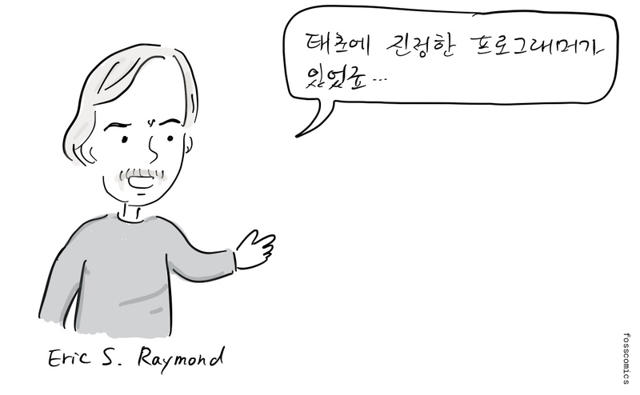
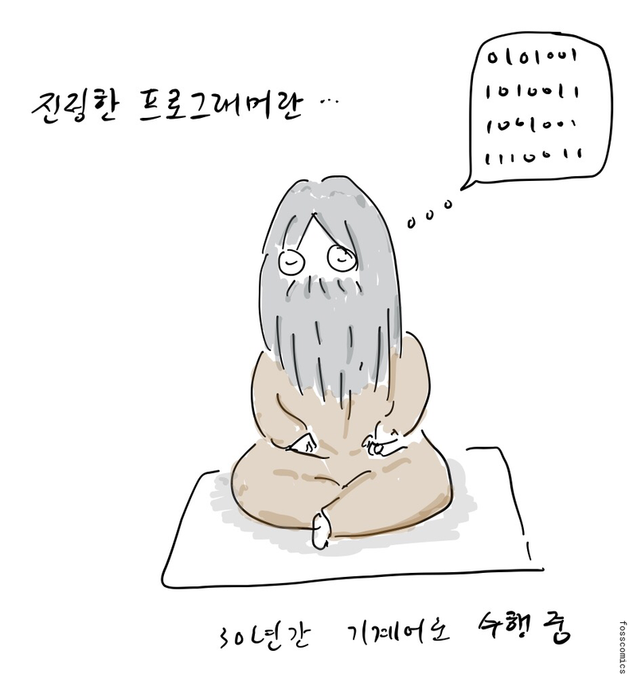
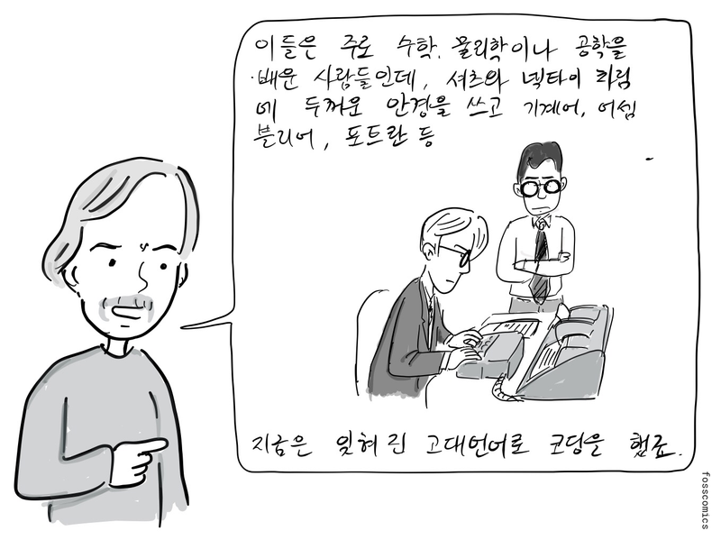
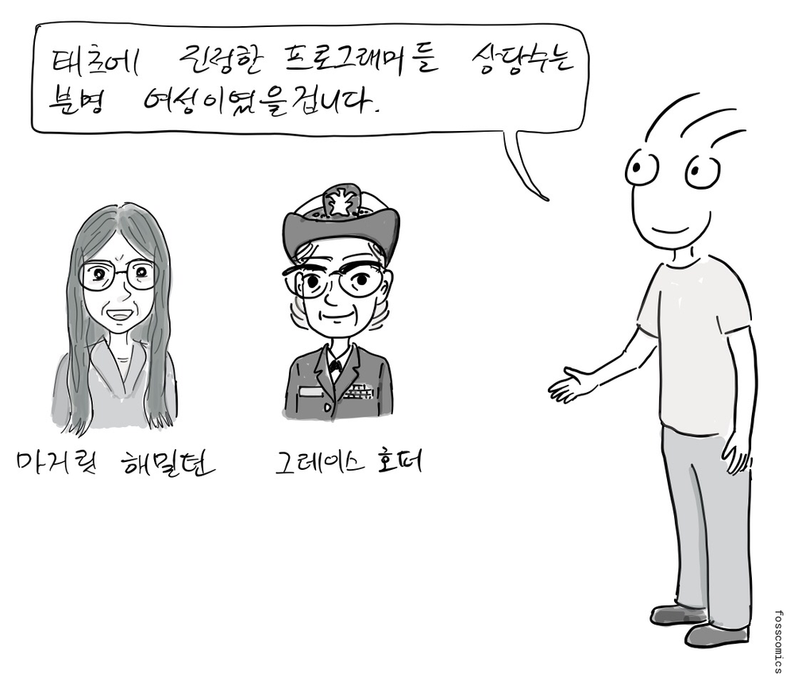
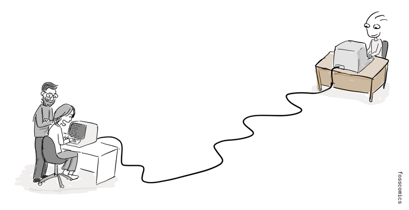
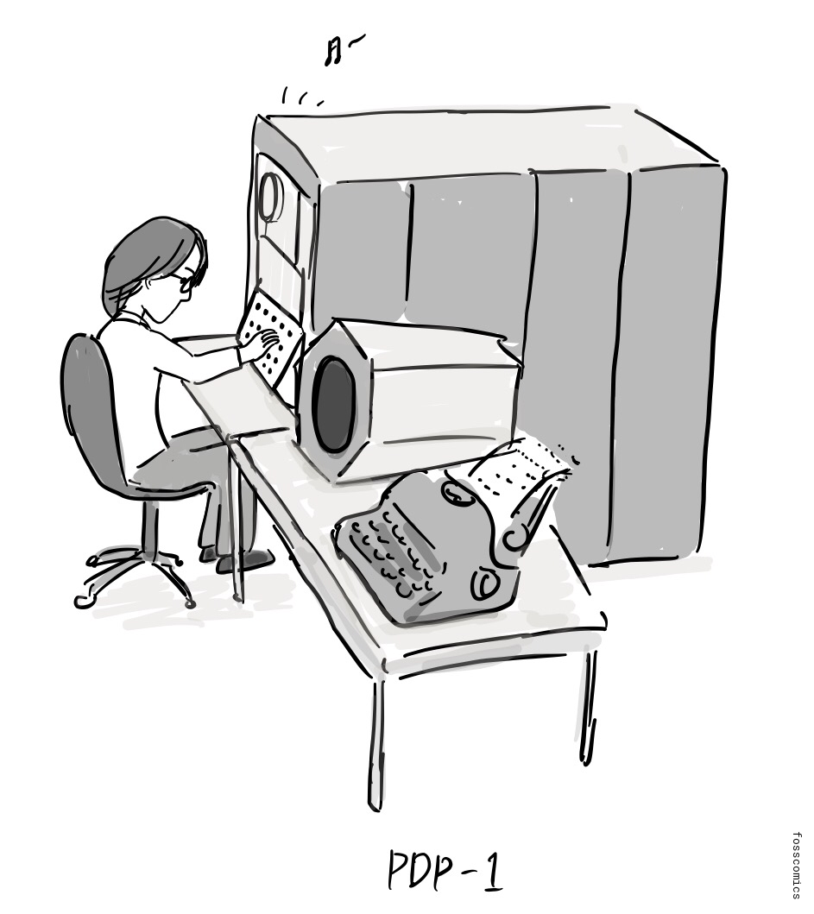
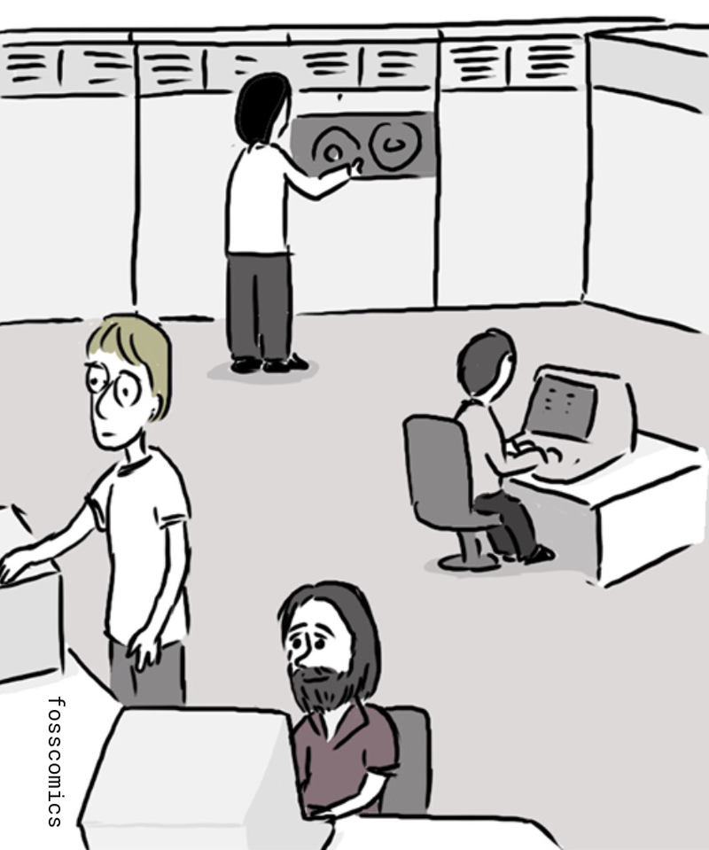

6. 해커문화의 탄생
알림: 이번 만화는 에릭 레이몬드의 "해커문화의 짧은 역사"를 참고했습니다.

“태초에 진정한 프로그래머가 있었죠 ...”

“진정한 프로그래머란 ...”
“30년간 기계어로 수련 중”

“이들은 주로 수학, 물리학이나 공학을 배운 사람들인데, 셔츠와 넥타이 차림에 두꺼운 안경을 쓰고 기계어, 어셈블리어, 포트란 등 지금은 잊혀진 고대언어로 코딩을 했죠.”
위키피디아의 프로그래밍 언어 역사 페이지를 보면 컴퓨터 초창기에 개발된 프로그래밍 언어들을 찾아볼 수 있다. 처음 들어보는 프로그래밍 언어가 있다면, 지금은 더 이상 쓰이지 않는 고대 언어일 가능성이 크다.
물론 당시 여성 프로그래머들의 활약도 빼놓을 수 없다.

“태초에 진정한 프로그래머들 상당수는 분명 여성이었을겁니다.”
이러한 진정한 프로그래머들이 만들어 놓은 문화는 대화형 컴퓨팅과 네트워크를 발전시켰고, 오늘날의 오픈 소스 해커 문화에도 영향을 주었다[1].

MIT의 초기 해커 문화는 PDP-1이 도착하기 전 테크 모델 철도 클럽에서 시작되었다. DEC는 1959년에 PDP-1을 선보였고, MIT는 1960년에 초기형 한 대를 받았다. 당시 PDP-1을 접한 학생들은 재미로 Spacewar!라는 비디오 게임을 만들었다. 이 게임은 가장 초기의 비디오 게임 가운데 하나로 큰 영향을 남겼다. 이들은 문서 편집기와 체스 프로그램도 만들었고, 컴퓨터 음악을 연주하기도 했다.

아래 유튜브 동영상에서 PDP-1으로 음악을 연주하고 Spacewar!를 실행하는 모습을 볼 수 있다.
당시 MIT는 프로젝트 MAC의 AI 그룹과 이후 인공지능연구소를 중심으로 해커 문화의 주요 거점이 되었다. 존 매카시는 1958년 MIT에서 Lisp를 개발했다. 1967년 무렵 AI 그룹의 프로그래머들은 PDP-6에서 ITS(Incompatible Timesharing System)라는 시분할 운영체제를 개발하기 시작했고, 이후 PDP-10 계열 컴퓨터에서도 개발을 이어갔다. 이들은 소프트웨어와 기술 아이디어를 다른 대학과 연구기관에 무료로 제공했다. 인터넷의 전신인 ARPANET에 MIT 시스템이 연결된 이후, 이러한 프로그램과 작업 방식은 연결된 다른 공동체로 더 쉽게 퍼져나갔다.

미국 컴퓨터 역사 박물관 읽을거리
- PDP-1 복원 프로젝트, 미국 컴퓨터 역사 박물관
- PDP-1 시연 연구실, 미국 컴퓨터 역사 박물관
참고 자료
- 에릭 레이몬드, 해커문화의 짧은 역사